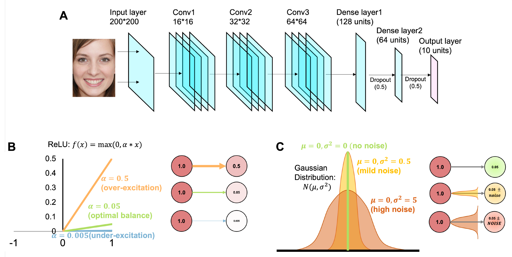
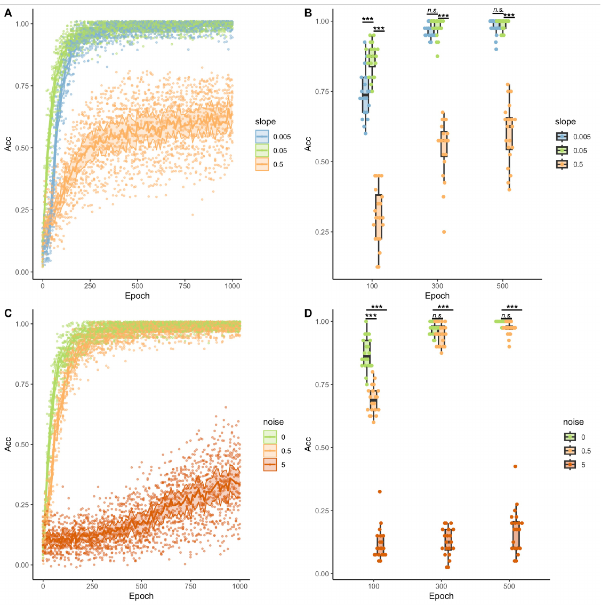
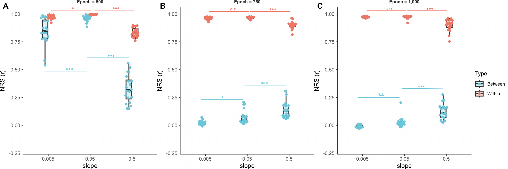
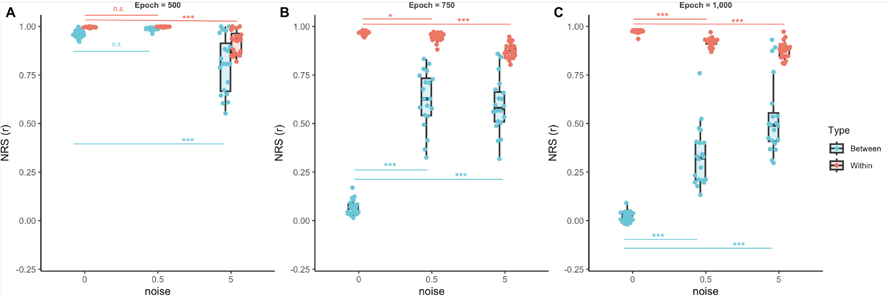
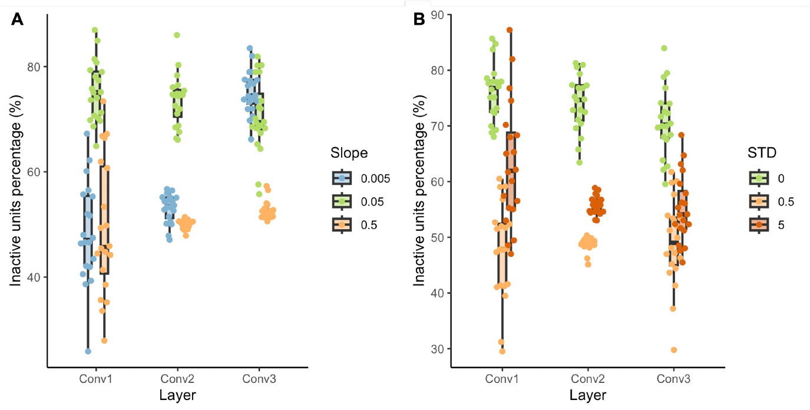

E/I Imbalance Degrades Accuracy
Over-excitation (high E/I ratio) systematically reduces face classification accuracy compared to balanced or inhibition-dominated conditions.
1Mathematics & Computer Science, 2Neuroscience Program, 3Psychology — Santa Clara University
Face recognition is commonly altered in Autism Spectrum Disorder (ASD), yet the underlying neural mechanisms remain poorly understood. Here we use biologically grounded convolutional neural networks to investigate how two physiologically motivated factors — excitatory/inhibitory (E/I) imbalance and excessive internal noise — affect learned face representations. By systematically varying the E/I gain ratio across model layers that map onto the ventral visual stream (V1 → V2 → V4 → IT), we show that increased excitation degrades both classification accuracy and the representational similarity structure of face identities, mirroring patterns observed in ASD. Internal noise produces complementary but distinct impairments. These results provide a mechanistic account linking cellular-level E/I disruption to systems-level face-recognition deficits.
Over-excitation (high E/I ratio) systematically reduces face classification accuracy compared to balanced or inhibition-dominated conditions.
RSA reveals that elevated excitation collapses within-person similarity while inflating between-person similarity, weakening neural face representations.
Internal noise impairs recognition through a different mechanism: it flattens representations uniformly rather than selectively disrupting identity structure.

(A) CNN architecture: three convolutional blocks followed by two dense layers and a softmax output. (B) Modified ReLU activation with adjustable E/I slope parameter α. Higher α simulates excitation-dominated processing; lower α simulates inhibition dominance. (C) Gaussian noise injection at three intensity levels to model internal neural noise.
Download PDF
(A) Training accuracy curves across slopes (E/I ratios): near-balanced conditions converge fastest and highest. (B) Accuracy at epochs 100, 300, and 500 by slope, with significance tests. (C–D) Analogous curves and boxplots for noise manipulations; high noise drastically impairs learning.
Download PDF
Within-person vs. between-person representational similarity (NRS) across E/I slopes at epochs 500, 750, and 1000. Over-excitation collapses the within–between gap.
Download PDF
Within-person vs. between-person NRS across noise levels. High noise uniformly degrades both within and between similarity, flattening representations.
Download PDF
(A) Percentage of inactive units per convolutional layer under different E/I slopes. (B) Inactive unit percentages under different noise levels. Under-excitation increases unit inactivity, particularly in deeper layers.
Download PDFThe codebase is organized into two complementary pipelines:
small-scale-custom-cnn/
Original small-scale pipeline. Customized TensorFlow/Keras CNN trained on 10 identities (50 cropped face images). Includes the model, training code, data sample, and results from the initial experiments.
large-scale-cornet/
CORnet-based large-scale pipeline (PyTorch). Extends the study to 100 VGGFace2 identities with E/I pathology injection, multi-run training, RSA, and R-based statistical analyses.
If you use this code or find our work useful, please cite: